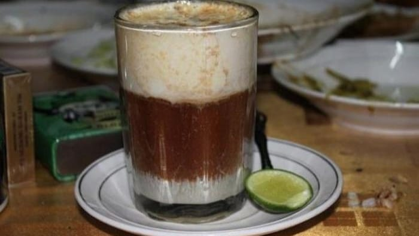

Teh Talua atau teh telur adalah minuman manis khas Sumatera Barat yang dapat dijumpai di lapau, warung tradisional minangkabau hingga resroran padang. Minuman ini berupa teh yang ditambahkan gula dan telur yang sudah dikocok serta sedikit perasan jeruk nipis, telur yang digunakan pada umumnya merupakan telur ayam Kampung.

Resep Teh Talua
1 Butir kuning telur ayam kampung/ bebek
1 Sendok makan gula
1 Sachet susu kental manis
1/2 Sendok teh cokelat bubuk
1 Gelas air
3 Sendok makan teh serbuk
2 Cm jahe geprek (opsional)
Sedikit perasan jeruk nipis (opsional)